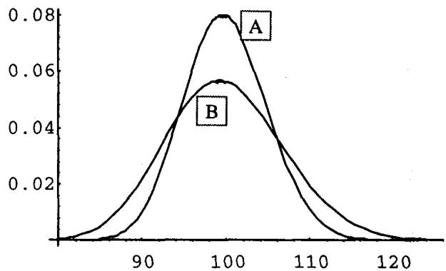
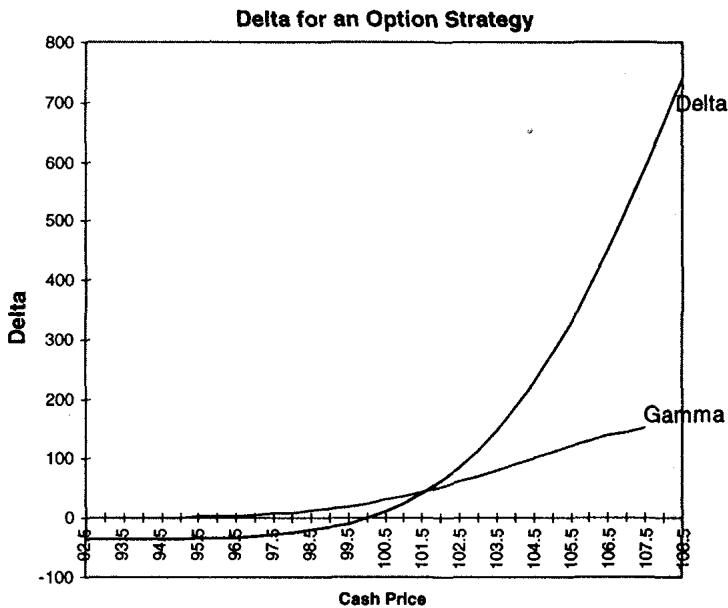
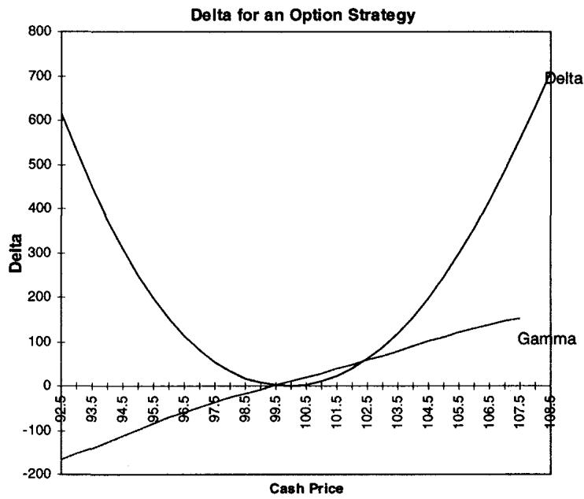
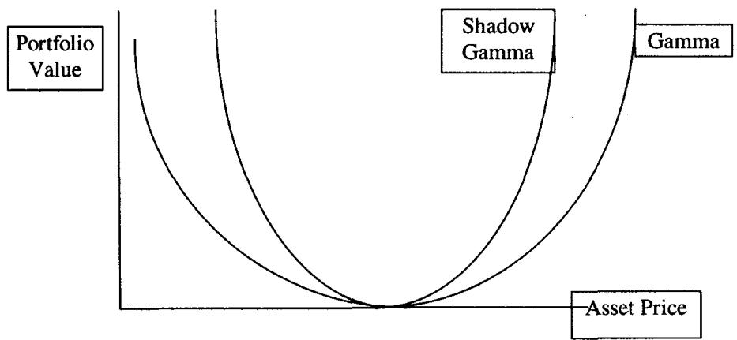
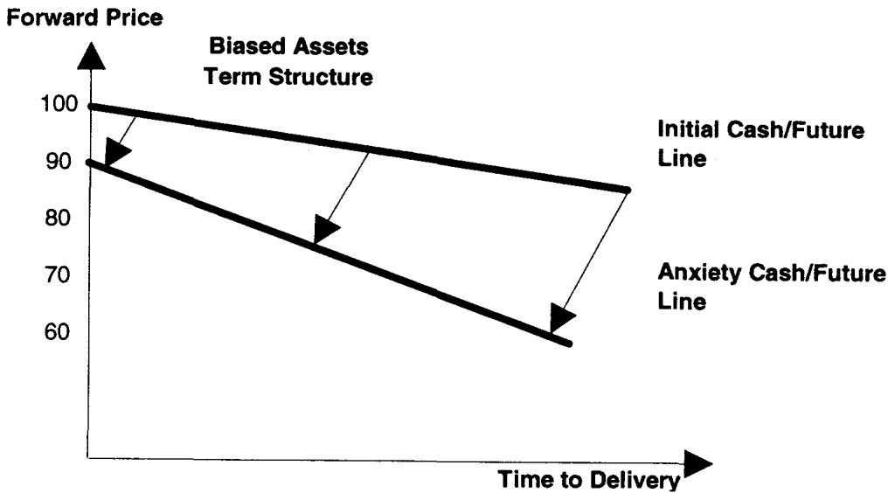
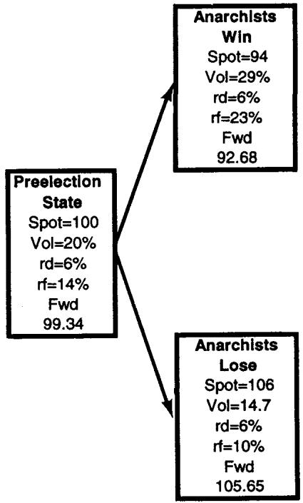

第八章：Gamma 与 Shadow Gamma（Gamma and Shadow Gamma）
那家伙没把二阶导数搞对。 —— 1994 年某交易员对一只号称"市场中性"却爆仓的对冲基金的评语
导读：本章要解决的问题
上一章把 delta 拆穿成"原点处的一条切线"，本章顺着同一条逻辑往二阶走：既然一阶量靠不住，那个本该补全它的二阶量 gamma 可靠吗？Taleb 的回答仍然是否定的，而且否定得更彻底。**gamma 作为一个解析二阶导数，在单期权上就已经左右不对称，在组合上会随现货点跳变符号，到了真实市场里它还漏掉了一件最致命的事：市场一动，波动率会跟着动。**把这层联动补回去，就是本章的主角 shadow gamma（影子 gamma）。
Taleb 用一个 1994 年的真实事故开篇。一只号称"市场中性"的对冲基金亏掉至少 6 亿美元，一位交易员的解释只有一句："那家伙没把二阶导数搞对。"这句话定下全章基调：市场中性是一阶概念，真正埋雷的在二阶以上，而且二阶本身还会被波动率这个"隐藏维度"重新改写。
把本章压成四条主线：
- gamma 在时间上不均匀。平值期权临到期 gamma 最大，虚值期权离到期越远 gamma 越大。这让日历价差的 gamma 比较变得危险，必须给每个 gamma 配一个价格区间。
- gamma 在空间上对组合失真。组合把 gamma 变得"局部化"，同一本账可能在 100 long gamma、在 101.65 short gamma。解药是分别算 up-gamma 和 down-gamma，平均它们会骗人，风险逆转（risk reversal）正是被这种平均掩盖的结构。
- 不同到期的 gamma 不能直接比。后月合约的方差未必等于前月，basis 与现货相关会让远期移动不等幅，必须做波动率折算。
- gamma 必须升级成 shadow gamma。把"市场移动 ⇒ 波动率移动"（biased asset 还要加上"⇒ 利率差移动"）这层可预测的联动嵌进 delta 的重算里。
对我们这类读者，本章的理论价值在几处映射：up/down gamma 就是单侧二阶差分，揭示三阶量 DgammaDspot（speed）；后月 gamma 折算对应远期曲线协方差矩阵与久期加权；shadow gamma 是把 写成现货路径的确定性函数 ，于是真实的对冲斜率里多出一项 ，这正是 vanna（DdeltaDvol）通过价格-波动率联动进入有效 gamma 的机制；GARCH gamma 则把这种联动建成一个条件异方差的预测模型。笔记沿原文小节顺序展开，并在每个节点把这层映射写出来。
一、简单 Gamma：它在时间上并不均匀
gamma 是衍生品对资产价格的二阶（数学）导数，解析上很容易算：
定义没有悬念，对我们也无新意。Taleb 真正要敲的是 gamma 在空间和时间上的不均匀，尤其是它随时间的演化（即固定现货、让时间流逝时 gamma 怎么变）：
- 对平值期权，gamma 在临近到期时最大；
- 对虚值期权，gamma 在离到期还很远时最大。
这背后的直觉用我们的语言讲很清楚。平值期权临到期时，价值函数在 strike 附近从平滑的弯曲坍缩成 的尖角，曲率集中到一个越来越窄的区间，gamma 峰值因此飙升（解析上 ， 时发散）。虚值期权则相反，离到期远时还有足够的扩散概率让现货漂到 strike 附近，曲率铺在一段较宽的价格区间上；临到期时它大概率一文不值，曲率反而塌缩到零。
日历价差的陷阱：短跑者与马拉松者
gamma 的时间依赖对日历价差（calendar spread）有直接后果。

图 8.1 里，交易员买入期权 A（3 个月）、卖出期权 B（6 个月）。平值处 gamma 为正（A 线高于 B 线），但两条线会在某个价格水平交叉。Taleb 的比喻很传神：短跑者和马拉松者，马拉松者赢长距离，短跑者赢百米冲刺，中间必有一个距离两人速度相等。短期权的 gamma 在平值附近又高又尖（百米冲刺快），离开平值衰减得也快；长期权的 gamma 矮而宽（长距离耐力好）。
这张图暴露的对冲陷阱很实在：操作者常常用一笔期权交易去对冲眼前的 gamma 需求（定义在原点附近一个狭窄区域），却没给头寸提供长期稳定性。他们盯着 gamma 报告、买入"恰好够用"的保护，可这种保护在一个爆发的市场里可能转瞬即逝：你买的是百米冲刺的保护，市场却要跑马拉松。
每一个 gamma 度量都必须附带一个价格区间。
这条规则和第七章"每个 delta 都要附带步长 "是同一思路的延续：**离散世界里的希腊字母没有区间就没有意义。**一个 gamma 数字不说清它在多大的价格移动、多长的时间窗里成立，就只是一个原点附近的瞬时曲率，对真实的多日、大幅移动毫无承诺力。
二、账本的 Gamma 失真：up-gamma 与 down-gamma
比 delta 更甚，gamma 度量常常太"窄"，无法显示一个合乎逻辑的增量内真实移动的结果。对一个账本（book），这个度量精度更差，因为期权数量的累加让 gamma 变得"局部化"，越来越依赖某个特定的现货区间。一本账可能在 100 处 long gamma、在 101.65 处 short gamma、再高一点又 long，取决于在给定现货点上是哪个结构占主导。
实务上稳妥的做法是变动标的价格、在增量上计算对冲比率的实际变化，而且要做两次：
- 把价格往北移、算 delta 的变化，得到 up-gamma；
- 把价格往南移、算 delta 的变化，得到 down-gamma。
up-gamma（右 gamma）是标的上移某个设定增量时离散计算的 delta 变化；down-gamma（左 gamma）是标的下移时的同一量。
理论映射：up/down gamma 是单侧二阶差分，泄露了 speed
把两者平均、汇总成一个总 gamma 是有欺骗性的。在风险逆转情形里，gamma 一个方向为正、另一个方向为负，净掉两者会让 gamma 看起来骗人地"square"（中性）。用 up-gamma 和 down-gamma 分开看，才能显示三阶风险。
这里的数学很直接。中心二阶差分给出对称的 gamma，但 up 与 down 分开正是两个单侧估计：
两者之差正比于三阶导数：
Taleb 把这个三阶量叫 DgammaDspot（speed）。所以分别报 up/down gamma，本质是用一组单侧差分把被对称平均抹掉的 speed 暴露出来。一个 gamma 报表若只给中心值，就等于假设 speed 为零，而在风险逆转、临近到期、含障碍的账本里 speed 恰恰很大。
任何在某个增量上 up-gamma 与 down-gamma 符号相反的头寸。
Option Wizard：交易员的"gamma"本就包含一点三阶
没有市场经验的风险经理常指责交易员"把三阶导数塞进分析里"。但交易员需要在每个环节都用尽可能有力的度量，哪怕他口中的"gamma"超出了它理论上的范围。
Taleb 这句话点破了交易语言与教科书定义的错位：交易员把"带一点 gamma 的东西"叫 delta，把"带一点 DdeltaDvol 的东西"叫 gamma。这谈不上用词不严谨，它是离散对冲的现实要求：你在一个有限步长上重算对冲比率，得到的数天然混入了高一阶的信息。风险经理若按教科书的纯二阶定义去卡交易员，反而是把更贫信息的度量强加给更富信息的实务。
例：一个常规期权的不稳定 delta
交易员 long 2,000M 的 110 call，还剩 1 个月到期，初始 delta 是 36M，他做到 delta 中性（小小的 1.8%），波动率 15.7%。表 8.1 给出 up-gamma 和 down-gamma 的变化：
| 资产 | Delta | Up-Gamma | Down-Gamma |
|---|---|---|---|
| 93.5 | -36 | 0 | 0 |
| 95 | -35 | 1 | 1 |
| 96 | -33 | 3 | 1 |
| 97 | -30 | 5 | 3 |
| 98 | -25 | 9 | 5 |
| 99 | -16 | 16 | 9 |
| 99.5 | -9 | 20 | 12 |
| 100.0 | 0 | 25 | 16 |
| 100.5 | 11 | 30 | 20 |
| 101 | 25 | 37 | 25 |
| 102 | 62 | 52 | 37 |
| 103 | 114 | 71 | 52 |
| 104 | 185 | 91 | 71 |
| 105 | 276 | 111 | 91 |
| 106 | 387 | 131 | 111 |
| 107 | 518 | 146 | 131 |
| 107.5 | 589 | 152 | 139 |

图 8.2 让任何人都能看出 delta 变化率的不稳定：每个价位上 up-gamma 与 down-gamma 都有差异。就连这样一个最普通的单腿 call，速度（speed）也无处不在：100 处 up-gamma 25、down-gamma 16，差了 9，这 9 就是被对称 gamma 抹掉的三阶信息。
例：风险逆转，gamma 必须相对原点度量
经典的风险逆转（图 8.3、表 8.2）说明 gamma 必须相对原点来度量：
| 资产 | Delta | Up-Gamma | Down-Gamma |
|---|---|---|---|
| 93.5 | 449 | -140 | -165 |
| 95 | 249 | -98 | -126 |
| 96 | 151 | -71 | -98 |
| 97 | 80 | -47 | -71 |
| 98 | 33 | -26 | -47 |
| 99 | 7 | -7 | -26 |
| 99.5 | 2 | 2 | -16 |
| 100.0 | 0 | 11 | -7 |
| 100.5 | 3 | 20 | 2 |
| 101 | 11 | 29 | 11 |
| 102 | 40 | 48 | 29 |
| 103 | 87 | 68 | 48 |
| 104 | 156 | 90 | 68 |
| 105 | 245 | 111 | 90 |
| 106 | 356 | 130 | 111 |
| 107 | 486 | 146 | 130 |
| 107.5 | 558 | 152 | 139 |

看原点 100：up-gamma 是 +11，down-gamma 是 -7，符号相反。这正是风险逆转的定义特征。如果一个风险系统在这里报一个平均后的 gamma，它会显示接近中性，把"上涨 long gamma、下跌 short gamma"这个真实的、非常重要的不对称完全埋掉。交易员在下跌时是 short 曲率（卖出的那侧 wing），在上涨时是 long 曲率，这种结构在 delta 中性的伪装下尤其危险，因为它恰恰在市场下行、波动率上升时让你两头挨打。
三、后月 Gamma 的修正：不同到期不能直接比
日历价差常常产生两个不同水平的 gamma：一个到期上 long gamma，对另一个到期 short gamma。这看似稳定，问题在于两个到期未必有相同的方差。basis（现金与期货之差）可能与现货正相关，导致不同远期之间移动不等幅。这种情况下，对 gamma 的静态分析就会误导。需要修正，是因为 BSM 不允许利率移动。
Taleb 用一个 CME 的 SP500 日历价差举例：
| 合约 | 头寸 | Delta | Gamma | 真实 Gamma（折成前月当量） |
|---|---|---|---|---|
| Sep（90 天） | Long 2000 张 | 1030 | 100 | 100 |
| March（270 天） | Short 2000 张 | (1054) | (58) | (65) |
第一项调整：现值导致的敞口差异
后月相对前月可能有更低或更高的波动率敞口，这来自现值化。当期货曲线贴水交易（后月低于前月）时，6 个月到期的一单位商品比 3 个月到期的一单位商品要小，于是一张 6 个月合约的敞口小于 3 个月的。升水时则相反。不过这个效应很弱，会被影响后月合约波动率的其他因素淹没。
第二项调整：basis 稳定性导致的 gamma 差异
后月还可能因 basis（现金-期货关系）的稳定性而有更高或更低的 gamma。检查后月相对前月波动率的方法有几种：
- 单因子法：用每个月份的相对波动率。6 个月可能比 1 个月波动率更高或更低，交易员据此折算 gamma。
- 更复杂的协方差矩阵法：用远期曲线的协方差矩阵构造，基本方法见第 12 章。
在上面的例子里，操作者凭经验发现 March 比 September 多 12% 的波动率，意味着每当 September 移动 1 点，March 移动 1.12 点。他需要对这个差异做对冲，于是把 gamma 乘以 1.12，得到 65 个 gamma 而非 58。
不同到期的 gamma 未经适当调整不能相互比较。
理论映射：gamma 折算就是远期曲线的久期加权
这一节对我们是一个关于因子结构的提醒。把不同到期的 gamma 直接相加，隐含假设了整条远期曲线平行移动、且各点等波动。现实里前月与后月的远期由不同的曲线节点驱动，它们的协动结构由一个协方差矩阵刻画。单因子法用的是相对波动率 ，把后月 gamma 折成"前月当量"：
这等价于用前月作 numeraire、用 beta 把后月的曲率投影过来，和固定收益里把不同久期的 DV01 折算到一个基准点的做法同构。Taleb 把这个留到第 12 章（fungibility、convergence、stacking）展开，这里先立规矩：gamma 是有"币种"的量，币种就是它所属的到期/远期节点，不换算就相加等于把不同币种的钱直接相加。
四、Shadow Gamma：把"市场动则波动率动"嵌进 delta
通常 gamma 本身什么都说明不了，因为头寸对波动率变化（或 skew 价格）敏感，需要更丰富的分析技术。这要求把"移动所决定的其他因素的预期效应"（如波动率、有时是利率）嵌进来。
Taleb 点名一个大多数从业者犯的基础错误：运行头寸时不考虑标的资产的移动与市场其他要素的变化相联系。**市场的跳跃总是伴随波动率的跳跃。**一个不计入这一点的 gamma 数字毫无意义。
凡是能够有把握预测的，都需要纳入风险分析。忽略它们会让希腊字母度量变成纯粹的理论操练。
Taleb 特意区分"预测（predicting）"与"建模（modeling）"，并说这与保留 BSM 不冲突：他推荐预测而非建模，因为预测允许交易员改变主意，而建模会把观点冻结进一套无法挣脱的估计量装置。这句话值得我们这类容易往"建一个随机波动率模型"方向跑的读者记住：shadow gamma 的精神是启发式、可随时修正的情景预测，而非又一个需要估计参数、一旦设定就锁死的模型。它解决的恰恰是第七章"好模型为什么会死"里那个参数估计风险问题：与其去估 vvol 和相关性，不如直接画一张"现货-波动率"的映射表，手动、可改、对自己负责。
shadow gamma 是在计入波动率变化及其对头寸影响的前提下，对 delta 变化的预测；头寸用新的波动率参数重新估值。
例：long the wings 的隔夜 gamma 交易
一个交易员 long the wings（即 long 虚值期权）。他估计如果市场朝任一方向剧烈移动，波动率应当上升。为简化，假设资产是"平行"的，上移与下移对参数造成相同变化。他想在期权市场收盘后，通过隔夜交易 gamma 来兑现这个效应。
初始假设：在 98 或 102 时波动率会高一个点。结果是：在 98.00 的隔夜未来，交易员可以买 731 单位标的而非 645；在 102 的隔夜未来，可以卖 698 单位而非 612。

表 8.3 给出 shadow gamma 的细节（节选）：
| 资产 | P/L（波动率不变） | P/L（波动率高 100bp） | Delta（波动率不变） | Delta（波动率高 100bp） | Delta 差 |
|---|---|---|---|---|---|
| 96 | 279 | 352 | -1,605 | -1,730 | -126 |
| 97 | 146 | 207 | -1,071 | -1,185 | -114 |
| 98 | 61 | 112 | -645 | -731 | -86 |
| 99 | 15 | 59 | -300 | -346 | -47 |
| 100 | 0 | 39 | 0 | -1 | -2 |
| 101 | 15 | 58 | 292 | 337 | 44 |
| 102 | 59 | 110 | 612 | 698 | 86 |
| 103 | 139 | 200 | 991 | 1,109 | 118 |
| 104 | 260 | 334 | 1,450 | 1,588 | 137 |
交易员因此可以在上涨时卖更多期货、在下跌时买更多期货。**真实的 gamma 比单因子矩阵显示的更强。**常规矩阵显示 up-gamma 为 292，shadow gamma 是 337；常规 down-gamma 是 300，shadow down-gamma 是 346。shadow gamma 双向起作用：通过更紧的期货再平衡，short gamma 的对冲者也能更准确地对冲 P/L 的变化。
理论映射：shadow gamma 把 vanna 通过 σ(S) 引入有效 gamma
这一节是本章理论核心。常规 gamma 把波动率当常数，只算 。shadow gamma 承认波动率是现货的函数 ，于是真实（有效）的 delta 变化要用全导数：
第二项里的 正是 vanna（DdeltaDvol）， 是交易员预测的波动率对现货的斜率。long wings 的头寸 vanna 结构使得：上涨且波动率升时 delta 更高、下跌且波动率升时 delta（绝对值）更高，两个方向都让有效 gamma 大于常规 gamma（337 > 292，346 > 300）。这就是为什么 Taleb 说"真实 gamma 更强"：它多了 vanna×斜率这一项。把 设成确定性函数，shadow gamma 因此是一个局部波动率（local volatility）风味的启发式，但 Taleb 故意不把它写成需要标定的随机过程，保留手动预测的灵活性。
Taleb 给出离散公式。对标的变动 ，假设波动率上升 （不进一步用多项式复杂化）。在点 （）：
注意这两个差分里，移动后的那一端用的是被抬高的波动率 ，移动前的中心点用原波动率 。这正是上面全导数在离散化时的实现：把波动率联动直接焊进 delta 的两侧重算。更高级的版本（表 8.3）则用远期与现金之间的精确关联、投影更夸张的现金移动。
进阶：预期波动率/现货依赖网格（volatility map）
资深期权交易员可以从记忆里评估一次市场移动对波动率的冲击，结果就是一张波动率地图（表 8.4）。Taleb 坦承这不过是一个预测，但通常好过"用常数波动率看移动"的常见方法。
| 起始价 | 一日后价格 | 由此产生的波动率变化（3 个月期权） |
|---|---|---|
| 100 | 105 | 1 |
| 100 | 104 | 0.5 |
| 100 | 103 | 不变 |
| 100 | 102 | -0.5 |
| 100 | 101 | -0.2 |
| 100 | 100 | 不变 |
| 100 | 99 | 不变 |
| 100 | 98 | 0.5 |
| 100 | 97 | 1 |
| 100 | 96 | 2 |
| 100 | 95 | 3 |
| 100 | 94 | 4 |
| 100 | 93 | 7（恐慌） |
| 100 | 92 | 10 |
| 100 | 91 | 10 |
| 100 | 90 | 10 |
这张地图有两个不对称值得读出来。其一，大移动（尤其在平静期之后）会抬高波动率，这一点无可否认。其二，下跌引发的波动率上升远大于上涨：跌到 93 波动率跳 7（恐慌），跌到 92 以下直接跳 10；而涨到 105 只升 1。这就是 biased asset（下跌时引发焦虑的非对称资产）的特征，也是 skew 的来源。Taleb 提醒，这张地图其实可以反过来从市场期权价格里用 skew 和 smile 分析技术导出：市场骗不了太久，它早已发现大移动通常伴随波动率跳升，也相信某些移动（典型如股指的上涨）通常以折磨人的缓慢速度发生，并通过期权价格表达这种行为。
**Threshold shadow gamma（阈值 shadow gamma）**是 shadow gamma 的一个变体，对应这样一种信念：波动率的预期变化不是移动的线性函数，需要用"移动的时间表（schedules）"。Taleb 在这里给了一句很务实的方法论建议：与其用数学方法，不如直接让交易员画情景分析。这与"预测优于建模"一脉相承：把非线性的波动率反应交给交易员的经验判断去画一条折线，而不是去拟合一个多项式。
五、Shadow Gamma 与 Skew
对 biased asset（第 15 章），gamma 需要计入波动率的行为以及沿"skew 曲线"的移动。如果上行 strike 与下行 strike 的期权波动率之间存在不对称，gamma 就需要计入：一个平值期权的波动率可能随移动而升或降。未来波动率的线索，可以从当前虚值 call 和虚值 put 各自的交易位置读出来。
skew gamma 也叫"非对称 shadow gamma（asymmetrical shadow gamma）"。
这一节其实是上一节 那一项的精细化。前面的 long wings 例子为简化假设了上下对称（ 不分方向），现实中 biased asset 的波动率反应是非对称的：下跌时 的绝对值远大于上涨（正如表 8.4）。于是 shadow gamma 的两侧不再镜像，down 侧的 vanna 修正项更大。从曲面角度看，沿 skew 曲线移动意味着当现货下跌时，不仅整体波动率水平上移，平值点在 skew 上的相对位置也变了，这两层效应叠加成 skew gamma。读市场的虚值 call/put 报价，等于读出市场对 这条斜率的定价，可以用来校准自己手画的 volatility map。
六、GARCH Gamma
ARCH 是一种交易员避而不谈的波动率建模方法，它对应计量经济学家意识到的一件事：波动率成簇移动（clusters）。一个大移动会引发另一个大移动，平静日后面大概率还是平静日。对交易员来说，这种洞见毫不稀奇，但 ARCH 为学术界提供了异方差思维的框架。
Engle 和 Rosenberg (1995) 的 GARCH gamma 是 shadow gamma 的第一次学术发现。市场移动时未来波动率也会移动，这个信息需要被纳入未来的 delta，现在与未来 delta 之差就叫 GARCH gamma。
Taleb 把两者的区别讲得很清楚：表面上 GARCH gamma 听起来像 shadow gamma，但 shadow gamma 不对未来市场的实际波动率行为做任何断言，而 GARCH gamma 同时预测未来的历史波动率和隐含波动率。shadow gamma 只是一个启发式得到的预测，把期权价格当成标的路径的一个确定性函数。
理论映射：两者都在估计 ∂Δ/∂σ·dσ/dS，差别在 dσ/dS 从哪来
用我们前面的全导数框架看，GARCH gamma 和 shadow gamma 解决的是同一个项 ，分歧只在 的来源。GARCH 把它建成一个条件方差过程：
一个大的 （市场移动）通过 直接抬高下一期的条件方差，于是 GARCH 给出的是一个有统计模型支撑、对历史与隐含波动率都做预测的 。shadow gamma 则把这个斜率交给交易员的 volatility map，是一条手画的、确定性的、可随时修改的曲线。Taleb 的偏好仍然落在后者：GARCH 更严谨，但它把观点冻进了估计量；shadow gamma 牺牲严谨换来"我随时能改主意"的灵活。对实盘，能改主意往往比统计上更优更重要。
七、进阶 Shadow Gamma：当利率差也随价格移动
进阶 shadow gamma 计入交易员预期的、伴随资产价格变化而来的波动率与利率（或 carry）移动；此外，波动率曲线和利率曲线都被预期做非平行移动。
进阶 shadow gamma 适用于价格变化和波动率都与利率相关的商品。带"弱势一方"的货币对常常呈现这种困难：墨西哥比索很难在不引发利率防御性上升、波动率随之上升的情况下相对 OECD 货币贬值。"区间"内的货币（如旧 ERM）同样如此，弱势方需要用高到令人却步的利率来吓退投机者和其他央行的祸害。这导致必须用更复杂的因子来运行远期。
分析逻辑是：在一个 biased asset 里，如果现金货币下跌 10%，除了波动率上升，操作者还需要预测利率差会扩大。利率差的扩大会让后月比前月移动得更远，这种不平衡制造出额外的 gamma，可以解读为更高或更低。如果货币出现（不太可能的）上涨，利率差会收窄，但收窄的幅度不同（非对称）。
例：Syldavia 货币的远期放大效应
设想虚构货币 Syldavia，货币对符号 SYL-USD：
满足抛补利率平价的一年期远期价为
危机中货币跌到 90，这一跌会让 Syldavia 首都的一年期利率上升 2000 个基点（即 +20%）。结果远期变成
于是现货跌了 10 点（10%），一年期远期却挨了 24.14 点（27.75%）的打击。

表 8.5 假设交易员组合里只有一年期期权，给出价格-波动率-利率差的联动地图：
| 起始价 | 一日后价格 | 波动率变化（1 年期权） | 利率差变化（1 年远期） |
|---|---|---|---|
| 100 | 105 | 1 | —— |
| 100 | 104 | 0.5 | -0.75% |
| 100 | 103 | 不变 | -0.5 |
| 100 | 102 | -0.5 | -0.5 |
| 100 | 101 | -0.2 | 0 |
| 100 | 100 | 不变 | 0 |
| 100 | 98 | 不变 | 0 |
| 100 | 96 | 0.5 | 2 |
| 100 | 94 | 1 | 4 |
| 100 | 92 | 2（恐慌） | 10 |
| 100 | 90 | 3 | 20 |
| 100 | 88 | ? | ? |
| 100 | 86 | ? | ? |
表尾的问号是 Taleb 的诚实：交易员无法预测极端情形下的反应。要更精确，可以对每个到期（6 个月、2 年）重复这个练习，做同样的预测，再评估对组合的总影响。
理论映射：远期的 gamma 被利率差杠杆放大
这个例子把 shadow gamma 又推进一层。现货只动 10%，远期动了 27.75%，放大倍数来自利率差进入指数：，当 随 下跌而跳升时， 远大于常数利率下的值。对一个写在远期上的期权，有效 gamma 因此有两个来源叠加：波动率的 vanna 项，加上"远期对现货的非线性放大"项。用全导数写：
第二项在危机中（，即价跌息升）与第一项同号且很大，于是远期移动被利率差放大。这正是"biased asset 的弱势方"在压力下既 short vol 又 short 远期凸性的数学根，也解释了为什么这类货币的期权对冲在平静期看着温和、危机里突然失控。曲线非平行移动（前月后月利率反应不同）则要求按到期分桶重算，呼应第三节后月 gamma 的折算。
八、案例研究：Syldavia 大选
Taleb 用一个事件驱动的案例收束全章，它把 shadow gamma 推到极致：一个完全没有中间交易、市场从选前状态直接跳到两个结果之一的离散情景。
Syldavia 面临决定性大选，要在无政府主义政权和西方式资本主义之间选择。选举宣布前六个月、国家还平静时，所有到期的波动率都是无聊的 14%；如果无政府主义者落败，预计会回到这个水平（金融市场偏好西方资本主义、厌恶无政府主义者）。目前波动率在一个月期权是 20%，一路降到一年期的 16%。
为简化，假设头寸全在一个月期权。交易员账上有一组混合 strike（表 8.6）。投票结果一小时后揭晓，交易员不信任何民调，不给每个事件赋任何真实概率。Syldavia 货币现报 100 兑美元，利率 14% 对美元 6%。
交易员和同行碰头，画出一张关于选举结果的路线图（图 8.6）。用这张图，他必须抛开常规希腊字母，只分析两种状态各自发生时的 P/L。

表 8.6 让交易员把常规 delta/gamma 矩阵与"真实"分布对照（节选）：
| 资产 | P/L (V=14.7%) | P/L (V=20%) | P/L (V=29%) | Delta (V=14.7%) | Delta (V=20%) | Delta (V=29%) |
|---|---|---|---|---|---|---|
| 93 | 14 | -86 | -225 | 334 | 383 | 462 |
| 95 | 52 | -29 | -143 | 65 | 193 | 357 |
| 97 | 47 | -5 | -80 | -104 | 60 | 287 |
| 99 | 18 | 0 | -26 | -173 | 1 | 258 |
| 100 | -8 | 起点 | 15 | -175 | 起点 | 260 |
| 101 | -17 | 1 | 26 | -156 | 19 | 272 |
| 103 | -40 | 12 | 85 | -57 | 108 | 324 |
| 105 | -34 | 48 | 158 | 127 | 252 | 407 |
| 107 | 16 | 116 | 250 | 379 | 431 | 510 |
按常规 BSM delta，交易员在 20% 波动率、现货 100 处是中性的（那一格 delta 为 0）。但状态之间无法交易，他必须从这个练习里导出 shadow delta 和 shadow gamma。Scenario A 是无政府主义者获胜的预期 P/L（高波动率、低证券价格），Scenario B 是无政府主义者落败（低波动率、高证券价格）。
交易员能发现的第一件事是：**尽管这个头寸的 BSM gamma 是平的（上涨略正、下跌略负），它却是 short shadow gamma。**上涨损失 15，下跌损失 181。两种"真实"结果都让他亏钱，而常规矩阵把他标成中性。
理论映射：常规中性掩盖的是联合分布上的 short 凸性
这个案例是全章主线的终点。常规 delta/gamma 只在"波动率冻结在 20%、现货在 100 邻域"这个切点上成立，它报中性。但真实世界里两个事件各自把（现货，波动率）这一对联合地推到不同的格子：A 是（下跌，波动率升到 29%），B 是（上涨，波动率降到 14.7%）。把头寸在这两个真实落点上重新估值，两边都亏（-181 和 -15），说明它在事件的联合分布上是 short 凸性的，哪怕在边际的、单维的 BSM gamma 上看着平。
用我们的语言，这是一个跨越 vega 和 gamma 的联合敞口：头寸的负 P/L 同时由 （现货大幅偏离）和不利的 vanna/vega 联动（波动率往伤害自己的方向走）共同造成。事件驱动情景下，delta 再平衡的前提（连续、可交易的路径）被取消，于是唯一有意义的风险度量就是在离散的可能落点上做全重定价，这正是第七章末尾"用全重定价替代灵敏度近似"在事件风险上的兑现。更进阶的期权交易假设留到第 16 章。
九、本章综述：理论与实务的对照
| Taleb 的实务命题 | 对应的理论命题 |
|---|---|
| 平值临到期 gamma 最大、虚值离到期远 gamma 最大 | ，终值尖角处曲率集中 |
| 每个 gamma 必须附带价格区间 | 离散二阶差分依赖步长，瞬时曲率无多日承诺力 |
| 分别报 up-gamma 与 down-gamma | 单侧二阶差分，其差 Speed（三阶 DgammaDspot） |
| 风险逆转：两侧 gamma 符号相反 | 对称平均抹掉 speed，掩盖三阶风险 |
| 交易员的"gamma"含一点 DdeltaDvol | 有限步长重算天然混入高一阶信息 |
| 不同到期 gamma 不能直接比 | 远期曲线协方差/久期加权， |
| shadow gamma：市场动则波动率动 | 全导数 |
| 真实 gamma 比单因子矩阵更强 | vanna×斜率项使有效 gamma 增大（337>292） |
| volatility map 下跌侧远陡于上涨侧 | biased asset 的 skew， |
| 预测优于建模 | 启发式 保留可修正性，避开参数估计风险 |
| GARCH gamma 同时预测历史与隐含波动率 | 条件异方差 |
| 弱势货币：价跌则息升、远期被放大 | ， 放大 |
| 大选头寸 BSM gamma 平、shadow gamma short | 联合（现货,波动率）分布上的 short 凸性，需全重定价 |
核心观点
第一，gamma 和 delta 一样不可单独取信。它在时间上不均匀、在组合上局部化、用对称平均会埋掉三阶风险。up/down 分开报、附带价格区间，是最低限度的纪律。
第二，真正的 gamma 是 shadow gamma。市场移动与波动率移动绑定，把这层联动嵌进 delta 重算，有效 gamma 才接近真实。这一项的数学身份是 vanna 乘以波动率对现货的斜率。
第三，预测优于建模。shadow gamma 的价值不在数学精度，而在它是一张可随时修改的情景地图，避开了 GARCH、随机波动率那类模型的参数估计风险与观点冻结。
第四，biased asset 让风险在压力下叠加。下跌引发波动率升，弱势货币的下跌还引发利率差扩大、远期被杠杆放大，几股力量在危机里同向叠加，平静期的温和 gamma 会突然失控。
第五，事件风险只能靠全重定价。当路径被取消、市场直接跳到离散结果时，常规希腊字母失效，唯一可靠的是在每个可能落点上重估整个组合的 P/L。
面对一个 gamma 数字的操作清单
- 这个 gamma 附带价格区间和时间窗了吗？它在多大移动、多长时间里成立？
- 是 up-gamma 还是 down-gamma？两者符号一致吗？若相反，这是不是一个被中性伪装的风险逆转？
- 这个 gamma 里混了多少 speed（三阶）？单侧差分之差告诉我什么？
- 组合里有没有把不同到期的 gamma 直接相加？后月需要乘 折算吗？
- 我用的是常规 gamma 还是 shadow gamma？波动率对现货的斜率 我估了吗？
- 这是不是 biased asset？下跌侧的波动率反应是否远大于上涨侧（skew gamma）？
- 标的是弱势货币吗？价跌时利率差会扩大、把远期放大吗？要不要按到期分桶重算？
- 有没有临近的事件（选举、数据、政策）会让市场跳过我的再平衡区间？
- 若路径被取消，在每个离散落点上做全重定价，头寸的真实 shadow gamma 是 long 还是 short？
- 我买的 gamma 保护是百米冲刺型还是马拉松型？它能撑过一个爆发的市场吗？
一句话收束
本章最该记住的一句：**gamma 与其当成一个数，不如当成一张地图，它在不同价格、不同时间、不同波动率状态下取不同的值；而真正会让你亏钱的，是市场移动时波动率（biased asset 还有利率差）跟着一起动的那部分，常规 BSM gamma 恰恰把它当成了零。**把这张地图手画出来、随时修改，比再精致的模型都更接近你账本里的真实风险。